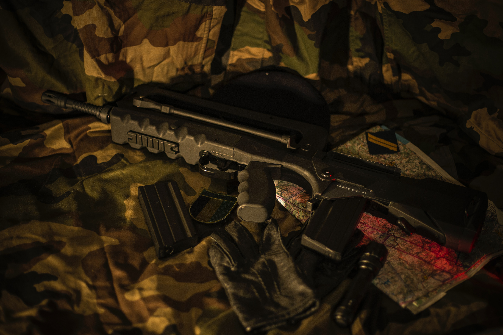

에어소프트건은 만 20세 이상에겐 승인이나 허가없이 국내에서 자유롭게 구매할 수 있는 성인용 장난감이다. 안전장구를 착용하고 규정만 잘 지키면 위험하지 않은 총기이다.

공기총과 원리는 비슷하지만 공기의 압력이 훨씬 낮으며 발사하는 탄의 재질이 다르다. 금속제 탄자를 발사하며 사냥에 사용할 수 있는 살상 무기인 공기총과 달리, 안전 장구를 착용하면 부상의 염려 없이 모의 전투나 사격을 즐길 수 있는 장비이다. 이 장비를 사용한 스포츠를 에어소프트 게임이라 부른다.